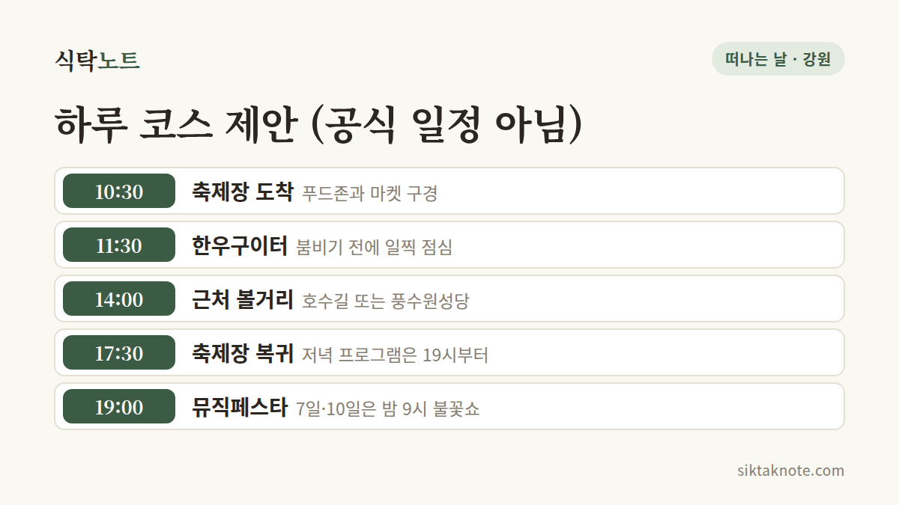

횡성한우축제 2026 가이드 — 불꽃쇼 날짜, 일자별 공연, KTX 임시정차

3줄 요약
- 제22회 횡성한우축제가 2026년 10월 7일(수)부터 11일(일)까지 5일간 횡성 섬강둔치 일원에서 열려요.
- 한우구이터에서 직접 고기를 고르고 구워 먹을 수 있고, 저녁마다 뮤직페스타와 야간 프로그램이 이어져요.
- 한글날(10월 9일)이 낀 3일 연휴와 겹쳐서, 주차와 이동 방법을 미리 알아 두면 마음이 편해요.
행사 정보
- 기간
- 2026년 10월 7일(수) ~ 11일(일), 5일간
- 장소
- 횡성읍 북천리 221 섬강둔치 일원
- 운영 시간
- 먹거리·즐길거리·볼거리 매일 10:00~21:00 (공식 일정표)
- 입장
- 무료 (언론 보도). 한우와 먹거리, 일부 체험은 별도 비용
- 문의
- 033-808-8006, 8007, 8009
2026.10.04 확인 기준. 한우 가격과 주차·셔틀 최종안은 공식 사이트에 수치로 올라오지 않았어요. 현장 안내판과 공지를 확인하세요.

한우 한 점 생각나는 계절, 횡성으로
횡성의 대표 특산물인 한우가 주인공인 축제예요. 올해가 벌써 22회째이고, 슬로건은 "맛있다, 머물다, 빛나다"랍니다. 낮에는 먹거리와 체험으로, 밤에는 공연과 야간 프로그램으로 하루가 채워져요.

한우구이터는 이렇게 쓰면 돼요
축제의 중심은 한우구이터예요. 공식 안내로는 셀프 직화구이존이고, 정육·로스·부속처럼 여러 부위를 맛볼 수 있어요. 한우 판매장에서 "합리적인 가격"으로 판다고만 안내되어 있고, 부위별 가격은 공식 사이트에 나와 있지 않아요. 그래서 가격표는 현장에서 보고 고르시면 돼요. 구이터는 횡성축협, 농협, 한우협동조합 등이 나누어 운영한다고 보도되었어요.
고기만 먹고 오기엔 조금 아쉽죠. 지역 맛집의 음식과 간식을 파는 횡성 맛마당 푸드존이 있고, 농특산물을 직접 살 수 있는 횡성 로컬팜 마켓도 열려요. 국순당 주향로체험관에서는 막걸리를 빚어 보는 체험이 소개되어 있어요.

닷새 동안 무슨 일이 있나
공식 일정표를 기준으로 날짜별로 풀어 볼게요.
| 날짜 | 낮 | 밤 |
|---|---|---|
| 10/7(수) 개막 | 지역예술단체 공연, 7080레트로카니발 | 개막식, 牛아한 뮤직페스타, 불꽃쇼 21:00, 횡성 나이트1988 |
| 10/8(목) | 한우리 푸드콘테스트, 牛아한 콘서트 | 牛아한 뮤직페스타 |
| 10/9(금) | 전통 혼례식, 牛아한 국악 한마당 | 牛아한 뮤직페스타 |
| 10/10(토) | 산소길 걷기대회, 牛아한 콘서트(트로트 가요제) | 뮤직페스타, 불꽃쇼, 횡성 나이트1988 |
| 10/11(일) 폐막 | 지역예술단체 공연, 7080레트로카니발 | 폐막식, 뮤직페스타 |
불꽃쇼 날짜는 조금 헷갈려요. 공식 일정표와 언론 보도에서는 10월 7일과 10일로 나오는데, 공식 메인 페이지에는 "7일, 9일, 11일"로 적혀 있어서 서로 달라요. 불꽃쇼가 이번 나들이의 목적이라면 출발 전에 공식 공지를 한 번 더 열어 보세요.
뮤직페스타 출연진은 언론 보도로 소개된 내용이라 바뀔 수 있어요.
- 7일: 이찬원, 나상도
- 8일: 박서진, 나태주
- 9일: 안성훈, 김수찬
- 10일: 최수호
- 11일: 김희재, 송민준
KTX는 임시로 서고, 차는 셔틀과 함께
올해는 KTX가 임시로 서요. 보도에 따르면 10월 9일부터 11일까지 청량리에서 동해로 가는 열차는 10시 37분에, 동해에서 청량리로 가는 열차는 16시 49분에 횡성역에 선다고 해요. 횡성역에서 축제장까지는 열차 시간에 맞춘 무료 셔틀이 다닌다고 합니다.
자가용이라면 임시주차장과 셔틀이 운영되는데, 주차장 수와 면수는 자료마다 달라요. 공식 교통 안내가 지도 이미지로만 올라와 있어서, 궁금한 점은 교통 안내 문의(033-808-8007)로 물어보는 게 가장 정확해요.
10월 9일이 한글날이라 금요일부터 일요일까지 3일 연휴예요. 그만큼 붐빌 수 있으니 이른 시간에 도착하는 쪽이 마음 편할 거예요.
축제 끝나고 들를 만한 곳
축제장에서 각 장소까지의 거리는 공식 자료로 확인하지 못했어요. 지도 앱으로 시간을 미리 재 보고 일정에 넣으세요.
갑천면 일원의 횡성호수길은 호수 둘레길이에요. 지난해 보도에서는 5구간 입장료가 2,000원이고 같은 금액의 횡성사랑상품권으로 돌려준다고 했는데, 올해 운영 조건은 가기 전에 알아보셔야 해요. 서원면 유현리의 풍수원성당은 오래된 성당으로, 강원도 유형문화유산으로 지정되어 있어요. 횡성읍 중심의 횡성시장은 장날이 1일과 6일이라고 알려져 있어서, 폐막일인 11일이 장날과 겹쳐요.
떠나기 전, 마지막으로
한우 가격은 현장 가격표를 보고 정하시면 되고, 구이터 이용 방식과 상차림 비용도 현장 안내를 따르면 돼요. 불꽃쇼는 날짜가 자료마다 다르고 날씨에 따라 바뀔 수도 있으니 공식 공지를 챙겨 보세요. 연휴와 주말 저녁이 가장 붐빌 텐데, 한우구이터는 점심 시간대에 일찍 가면 덜 기다릴 수 있어요.
이어서 갈 곳을 찾는다면, 10월 14일부터 18일까지 춘천에서 막국수닭갈비축제가 열려요. 강원도 축제를 날짜별로 보고 싶다면 10월 강원도 축제 일정이 도움이 될 거예요.
이 글은 2026년 10월 4일 기준이에요. 공식 정보가 바뀌면 이 글을 고쳐 쓸게요.